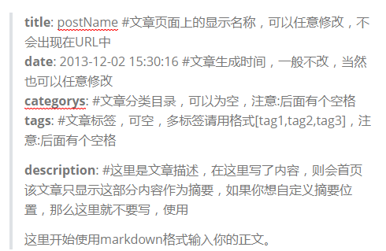
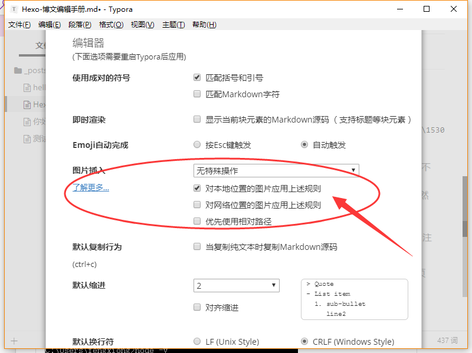
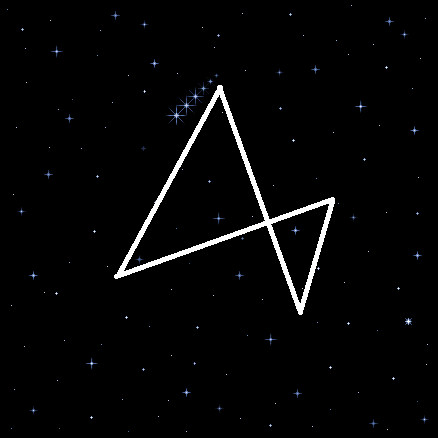

Hexo常见命令
更多知识见hexo的官方文档。
1 | hexo new "postName" #新建文章 |
缩写：
1 | hexo n == hexo new |
组合命令：
1 | hexo s -g #生成并本地预览 |
其中，hexo d -g 是最常用的。
草稿
草稿相当于很多博客都有的“私密文章”功能。
$ hexo new draft “new draft”
会在source/_drafts目录下生成一个new-draft.md文件。但是这个文件不被显示在页面上，链接也访问不到。也就是说如果你想把某一篇文章移除显示，又不舍得删除，可以把它移动到_drafts目录之中。
如果你希望强行预览草稿，更改配置文件：
render_drafts: true
或者，如下方式启动server：
$ hexo server —drafts
下面这条命令可以把草稿变成文章，或者页面：
$ hexo publish [layout]
博文参数设置
默认参数三个：
title标题date编辑日期tags标签（[1,2,3]可实现多个标签）
可选参数：
categories分类（[1,2,3]可实现多层分类）description简介
具体如下：

补充：
photos（文章首图）“url”password（密码）文章的访问密码top（置顶系数）设置数值，大者优先mathjax（数学公式）bool型，默认falsecomments（评论功能）bool型，默认trueupdated（修改日期）permalink（url中的名字-文件名）layout（post或page）
More截断和封面设置
使用<!-- more -->进行截断，<!-- more -->上面的内容就是显示在主页的摘要，把图片放在<!-- more -->上面就可以了。 （不要与description同时使用，否则无效）
或者：
1 | --- |
Markdown语法问题
“>”引用问题
已解决。【通过安装NexT主题兼容了“>”语法，详见第4部分】
使用”>”引用语法时，在网页上会解析为奇怪的居中。
正确期望如下图所示：（页面实际效果并不是这样）
实际效果：（一开始我的内心是绝望的~）
title: postName #文章页面上的显示名称，可以任意修改，不会出现在URL中
date: 2013-12-02 15:30:16 #文章生成时间，一般不改，当然也可以任意修改
categories: #文章分类目录，可以为空，注意:后面有个空格
tags: #文章标签，可空，多标签请用格式[tag1,tag2,tag3]，注意:后面有个空格description: #这里是文章描述，在这里写了内容，则会首页该文章只显示这部分内容作为摘要，如果你想自定义摘要位置，那么这里就不要写，使用
这里开始使用markdown格式输入你的正文。
目前已经显示正常~
（我使用的markdown编辑器为：Typora）
本地图片显示
完全解决。（参考本文的图床部分）
对于Typora的默认设置，图片是保存在本地的。
需要对图片的插入方式做一些调整。
决定采用：hexo博客图片问题【dalao相助~】
先设置配置文件中post_asset_folder为true。
1 | post_asset_folder: true #修改_config.yml配置文件post_asset_folder项为true。本地插入图片 |
按照上面博客的方法就行了。
值得注意的是，图片的引用格式需要无前缀：
1 |  |
Plus. 尝试了如下的Typora修改，发现会有一个asset的后缀名，也挺麻烦。

这个方法暂时不能用。233.
比较尴尬的是，此时，图片在本地编辑的时候就不能实时查看了。。。简单来说，实际操作起来有点麻烦。。。
学（zhuang）习（bi）的道路果然天高地远~
mark一个以后可能出现的坑：
想引入某些dalao 的链接时，如果链接里包含中文，那么再写入md文件里生成网页后这个链接就打不开了…..
NexT主题
Hexo有很多主题可以用。
（超级Fancy的 Muse 方案: LEAFERx | XiaMo | OAwan ）
Github开源，有官方中文Handbook【点击前面NexT链接即可】。就不啰嗦了~
也可以参考：使用Hexo+Github一步步搭建属于自己的博客（进阶）（相对来说比较简明）
最后的效果如何呢~既然你已经看到这里了。。。2333
制作gif动图+静态图的复合头像
我通过一张gif和一张背景透明化的静态图合成了头像。（其实从头像很难看出来是gif，2333）
如下图：

- 透明背景网上容易找到制作方法，可以在线制作。
- 合成叠加需要PS的时间轴动画功能。
- 还设置了头像旋转。一些Geek功能可以参考 这里 。
调试问题
头像解析BUG
当我的gif制作好以后，会在某段时间以后突然不能被网页解析。而其它图片的显示都是正常的。结果，把avatar.gif换了一个名字就好了（滑稽）。
文章配置的语法问题
错误为：can not read a block mapping entry; a multiline key may not be an implicit key。
观察，事实证明是文章的配置上出了一点语法问题。如：在配置项的:后忘记加空格。比较容易解决~
Git操作失败并提示Another git process seems to be running in this……
Git操作的过程中突然显示Another git process semms to be running in this repository, e.g. an editor opened by ‘git commit’. Please make sure all processes are terminated then try again. If it still fails, a git process remove the file manually to continue…
翻译过来就是git被另外一个程序占用，重启机器也不能够解决。
原因在于Git在使用过程中遭遇了奔溃，部分被上锁资源没有被释放导致的。
解决方案：
进入（本地）项目文件夹下的.deploy/.git文件中（显示隐藏文件夹或rm .git/index.lock）删除index.lock文件即可。
参考：Git操作失败并提示Another git process seems to be running in this……
评论区设置
使用Valine。极简主义，赞。
更实在的教程：为你的Hexo加上评论系统-Valine。
新增：一个 Valine 的拓展应用，用来增强 Valine 的邮件通知。
也可以参考：Hexo 优化 —- Valine 扩展之邮件通知。
注：SMTP用户名和密码就是：应用想要登上你的邮箱账户所需要的密码。（一般就是邮箱用户名和密码）
SMTP是一个邮箱传输协议。
插入多媒体
音乐
参考：Hexo博客中插入音乐/视频/以及 hexo添加音乐、high一下及一些坑，为Hexo添加音乐。
hexo-tag-aplayer：https://github.com/grzhan/hexo-tag-aplayer
安装命令：
1 | npm install hexo-tag-aplayer |
效果展示：
(网易云外链播放器)
Plus. 外链转换工具, HHTjim’S 部落格（需要手动参数调整）
最后采用了折中的办法~如下：
| BGM |
|---|
| Towards the Light - Jacoo |
视频
hexo-tag-dplayer： https://github.com/NextMoe/hexo-tag-dplayer
安装命令：
1 | npm install hexo-tag-dplayer |
效果展示：
(Bilibili分享-嵌入)
More： 在HTML中添加视频的代码
视频属性常用设定
- 视频居中
- 使用
<center> ... </center>
- 使用
width和height- 常用参数：
width=90% height=350。比例合适~ - 属于标签的通用属性了，这个不用多说。 分别是宽度、高度。
- 常用参数：
scrolling- scrolling 属性规定是否在 iframe 中显示滚动条。
- 默认地，如果内容超出了 iframe，滚动条就会出现在 iframe 中。
| 值 | 描述 |
|---|---|
| auto | 在需要的情况下出现滚动条（默认值）。 |
| yes | 始终显示滚动条（即使不需要）。 |
| no | 从不显示滚动条（即使需要）。 |
src- 文件的地址。
border- border 属性规定图像周围的边框的宽度，就是说可以增加或去掉图像的边框。
- 默认地，没有边框的（
=0）。
frameborder和framespacing- frameborder 属性规定是否显示框架周围的边框。
| 值 | 描述 |
|---|---|
| 1 | 有边框（默认值）。 |
| 0 | 无边框。 |
- framespacing是框架元素与它周边元素的空格个数。一般没什么作用。
allowfullscreen- 启用 iframe 的内容以在全屏模式下显示。如果缺少，则仅 iframe（而非框架内的内容）可以进入全屏模式。
scale- 说明: （可选）当 width 和 height 值是百分比时，定义应用程序如何放置在浏览器窗口中。
- “Showall”（默认值）使整个 flash 内容显示在指定区域中，且不会发生扭曲，同时保持它的原始高宽比。边框可能会出现在应用程序的两侧。
- “Noborder”对 flash 内容进行缩放以填充指定区域，不会发生扭曲，它会使应用程序保持原始高宽比，但有可能会进行一些裁剪。
- “Exactfit”使整个 flash 内容显示在指定区域中，但不尝试保持原始高宽比。可能会发生扭曲。
- 如果忽略此属性（而且 width 和 height 值是百分比），则它的默认值是 showall。
图床
我自己目前用的是Imgur。
使用步骤：
- 点击
Newpost - 上传图片（需要VPN）
- 在生成的图片页面点击
Get shared links，选择Markdown (Reddit)方式，点击Copy - 插入markdown文档中（注意，由于格式问题，此时还要前缀一个
!感叹号）
更多：收集常见的公共图床
修改链接文字样式
将链接文本设置为蓝色，鼠标划过时文字颜色加深，并显示下划线。
themes\next\source\css_common\components\post\post.styl 添加以下代码：
1 | .post-body p a{ |
选择 .post-body 是为了不影响标题，选择 p 是为了不影响首页“阅读全文”的显示样式。
Html标记语言更改文字样式
给出几个实例：
1 | <font face="黑体">黑体字示例</font> |
size可以根据实际大小进行设置，一般不超过7。
来看看效果：
黑体字示例 微软雅黑示例 华文彩云示例 color=#0099ff size=6 face="黑体" color=#00ffff12345 **常用**： turquoiseblue 翠蓝色 red 红色其他常用颜色。 华文楷体示例修改字体大小
打开\themes\next\source\css\ _variables\base.styl文件，将$font-size-base改成16px，如下所示：
1 | $font-size-base =16px |
RSS
RSS就是我博客右边边栏站点概览中显示RSS文字的东西。RSS(Really Simple Syndication)是一种描述和同步网站内容的格式，是使用最广泛的XML应用发布一个RSS文件。
这个RSS Feed中包含的信息就能直接被其他站点调用，而且由于这些数据都是标准的XML格式，所以也能在其他的终端和服务中使用，是一种描述和同步网站内容的格式。
可以通过以下命令进行安装
1 | npm install hexo-generator-feed --save |
安装完成后，在全局配置文件中添加相应配置：
1 | # Extensions |
其中，feed是可选项，可配可不配。
最后，在你的主题配置文件中，添加RSS订阅链接即可。
1 | rss: /atom.xml |
进度条
（回到顶部的额外功能）
主题配置文件 : _config.yml 中有这两个选项。
Back to top in sidebar (only for Pisces | Gemini).
1 | b2t: true |
Scroll percent label in b2t button.
1 | scrollpercent: true |
个人域名
暂时用不到个人域名，等做SEO优化的时候再弄吧。Flag一下~
因此，搜索功能也是不能用的~
更新：搜索功能能用啦~
这个local搜索功能比我想象的强大orz。无差别攻击orz。。。
更新：个人域名开通~
这是一个免费的域名。从freenom上申请，在阿里云解析上定向到指定的博客地址（还得在frennom上更新一下DNSserver，会有提示），在source目录下新建CNAME保存域名，即可生效！
还要更新Valine评论系统的白名单，可登录LeanCloud修改。
不过，从这个域名访问的话，点击量是重新统计的。这就比较尴尬orz
更新：个人域名更新~
BTW，现在Github设置Https协议可以直接在Setting里的Custom domain里Enforce HTTPS就好。
参考：
- hexo博客进阶－相册和独立域名
- 设置域名解析
- 最新godaddy配置域名解析(2018.04)
- HE.NET（Hurricane Electric）免费国外DNS域名解析服务
- 多个域名指向同一个 GitHub Pages 这个方法有毒。。
- hexo持久化构建以及给自有域名github-page上
SEO
Warning：不要过度使用SEO！！！
当我们搭建一个网站之后，如果没有做一些相关的搜索引擎优化SEO，那么我们的网站是很难获取来自搜索引擎的流量的，用户很难在搜索引擎上搜索到我们网站的内容，所以在这里我们要为Hexo网站做一些简单的搜索优化。
SiteMap
首先安装hexo的sitemap网站地图生成插件：
1 | npm install hexo-generator-sitemap --save |
在你的hexo站点的_config.yml添加下面的代码：
1 | # hexo sitemap网站地图 |
配置成功后，hexo编译时会在hexo站点根目录生成sitemap.xml和baidusitemap.xml
其中sitemap.xml适合提交给谷歌搜素引擎，baidusitemap.xml适合提交百度搜索引擎。
蜘蛛协议robots.txt
在source目录下创建robots.txt文件，添加下面的一段代码：
1 | Sitemap: http://www.linbinghe.com/sitemap.xml |
请自行改成自己的网站。
完整robots.txt文件内容：
1 | # hexo robots.txt |
谷歌Search Console与百度站长工具
这两个平台都是便于管理自己的网站，查看爬虫爬去频率等等，这两个的使用都不难，但是两者都需要通过验证，只要搜索这两个平台，到各自官网添加域名，按照文档说明通过验证即可。
谷歌可以通过提交站点地图提交我们的sitemap.xml，百度目前已经禁止了。
NoFollow
nofollow标签是由谷歌领头创新的一个“反垃圾链接”的标签，并被百度、yahoo等各大搜索引擎广泛支持，引用nofollow标签的目的是：用于指示搜索引擎不要追踪（即抓取）网页上的带有nofollow属性的任何出站链接，以减少垃圾链接的分散网站权重。
网上有很多资料，都是通过更改themes/next/layout/_partials目录下的footer.swig等文件，把hexo.io链接设置为非友链，但是大多数资料都已经过期了，至少我发现不是每一句我这边都能找到，这里推荐一个简单的方式，直接通过插件来解决。
1 | npm install hexo-autonofollow --save |
在站点配置文件中添加以下代码：
1 | nofollow: |
首页标题
更改index.swig文件，文件路径是your-hexo-site\themes\next\layout，将下面代码
1 | {% block title %} {{ config.title }} {% endblock %} |
改成
1 | {{% block title %} {{ config.title }} - {{ theme.description }} {% endblock %}} |
这时候你的首页标题会更符合网站名称 - 网站描述这习惯。
主动推送新链接
解决百度爬虫被禁止访问的问题，提升网站收录质量和速度。
1 | npm install hexo-baidu-url-submit --save |
在 站点配置文件 中添加如下代码：
1 | baidu_url_submit: |
为了主动推送链接，你还得在全局配置文件的deploy中添加配置：
1 | deploy: |
更多：
hexo高阶教程：想让你的博客被更多的人在搜索引擎中搜到吗？
对Hexo-nexT进行简单SEO优化基于Google收录站点
为了保证本地图片在git仓库的调用格式的兼容，permanent link必须以”/“动态结尾（之前为了SEO改过头了）。这与html优化有些许矛盾。可能后期需要图床或者个人云空间。
创作保护
协议：CC BY-NC-SA 4.0
相册功能
博客加载优化
最近发现博客加载的速度超慢。😢天哪，自己都受不了了orz
emmm…..决定去掉一些花哨的东西，提高加载速度。
主要是这么几个方面需要优化：
- 冗余的js效果、标签
- github的国外访问？
- 超长的单个博文体积（可能会影响到mathjax模块的有效加载，数学公式不能正常显示）
发现最大的还是github的问题。开了VPN之后速度噌噌噌~
我用过的VPN：蓝灯Lantern，赛风Psiphon，加速度Shadowsocks（严格来说非VPN，是个VPS二次代理，赚剪刀差）。
如今网络审查愈演愈烈。VPN或已经不再具有好的效用了？
Shadowsocks（SS），SSR，Brook等基于分布式链路的加密传输方式比较流行。
可使用免费节点：（需要翻墙才能打开）
https://free-ss.site/
https://www.free-ss.tw/
https://www.ssrtool.com/tool/free_ssr
https://shadowsocks-share.herokuapp.com/
https://www.wuwweb.com/
http://www.softpen.net/#Portfolio
https://doub.io/sszhfx/
https://www.hongchengziyuan.com/?cat=4也可自行付费搭建VPS（国外服务器，用于建立翻墙的虚拟专用链路）。
也可购买其他人建立的VPS的使用权，如：
BTW，Tor可以用来保护个人隐私，Telegram用来加密通信。
BBTW，再推荐一个开源的中文输入法：Rime中州韻輸入法。以及使用指南。
夜间模式
Echarts动态图表
格式：
1 | {% echarts 400 '85%' %} |
其中 echarts 是标签名，不需要更改，400 是图表容器的高度，85% 是图表容器的相对宽度。而在 tag 之间的部分，则是需要自己填充的图表数据了。
示例：
1 | {% echarts 400 '85%' %} |
文章加密
似乎有些不兼容。JS方式的静态网页加密机制我还没有特别理解，可能是在浏览器内做一个加密密码，表单上通过输入密码进行运算后与密文做对比，来确定是否有权限?
新的渲染引擎
一开始是因为我的图片地址转换又出现了以前的问题，asset-image选项并没有使得解析的地址正确，中间多了一层嵌套。
在网上搜索一番后，确定这与渲染引擎是有关的。光安装一个image插件没有效果。
参考：https://bugwz.com/2019/09/17/hexo-markdown-renderer
这篇文章介绍了常用的一些引擎的特点。我决定采用hexo-renderer-markdown-it-plus先试试。
搞了半天感觉兼容性不够好。换回来了。
kramed换回来以后仍然有一些小的细节问题。前端坑太大了。。
http://www.thebetterkong.cn/2020/05/20/Blog-Related/ImproveMathJax/
好的，参照之前版本的一些方法改得差不多了。
表情支持
Reference
博文编辑Reference
如何搭建一个拥有个人域名又带点Geek味的独立博客【主题超棒】
使用hexo+github搭建免费个人博客详细教程【内容详细】
打造个性超赞博客Hexo+NexT+GitHubPages的超深度优化
Hexo博客加载优化
Hexo多Repo部署——使用Github和GitCafe同时托管博客
让 Hexo NexT 支持 emoji 表情 新版已经不需要在修改a标签，警告，新版本可能会覆盖图片相对路径
相关文章